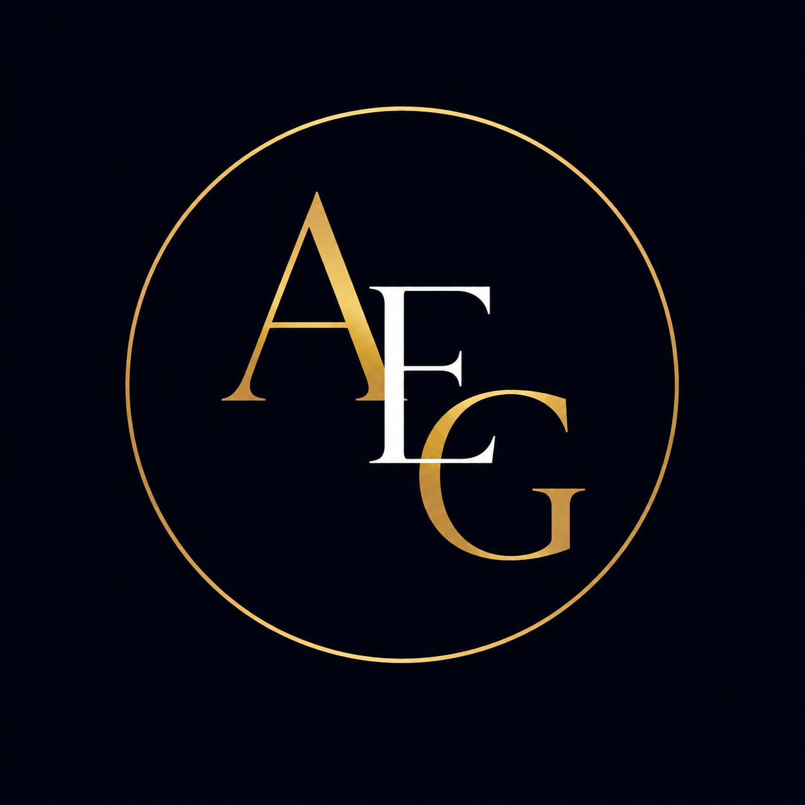
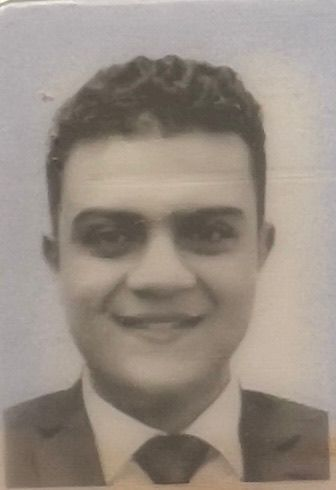

Law • Logistics • Digital Transformation
Law, Logistics & Digital Transformation
Legal researcher with interdisciplinary interests spanning international commercial transactions, arbitration, logistics systems, governance and digital transformation.

Ambassador Programs
Years Experience
Legal Studies
Transactions & Logistics
Contributing to youth development, sustainability initiatives and digital awareness programs.
Participated in sustainability awareness initiatives and collaborative volunteer activities.
Supported AI education and awareness programs through ambassador initiatives and coordination efforts.
Engaged in academic networking, knowledge sharing and youth-oriented development activities.
Professional and ambassadorial involvement in governance modernization and digital transformation initiatives.
Participated in programs focusing on digital awareness, transformation strategies and institutional modernization concepts.
Contributed to governance-oriented activities emphasizing transparency, sustainability and smart institutional practices.
Professional networking, innovation exposure and executive-level technology insights.
Engaged with leading companies, institutions and emerging technology initiatives during CairoICT participation.
Explored smart governance systems, digital ecosystems and transformation frameworks shaping modern institutions.
Expanded understanding of technology strategy, innovation policy and interdisciplinary digital environments.